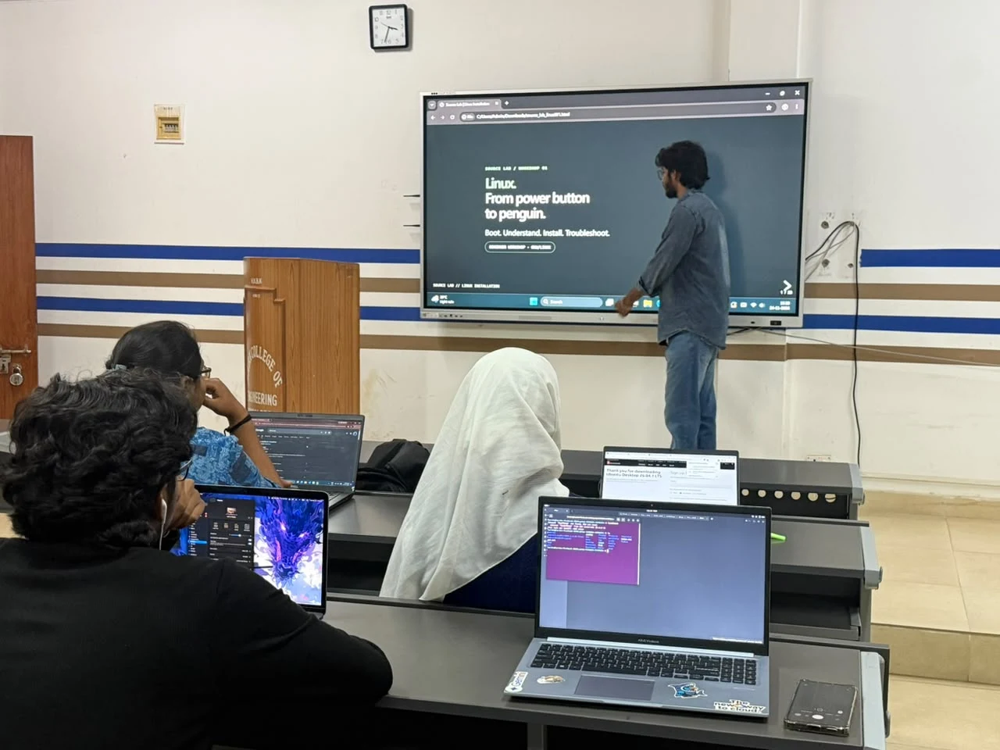
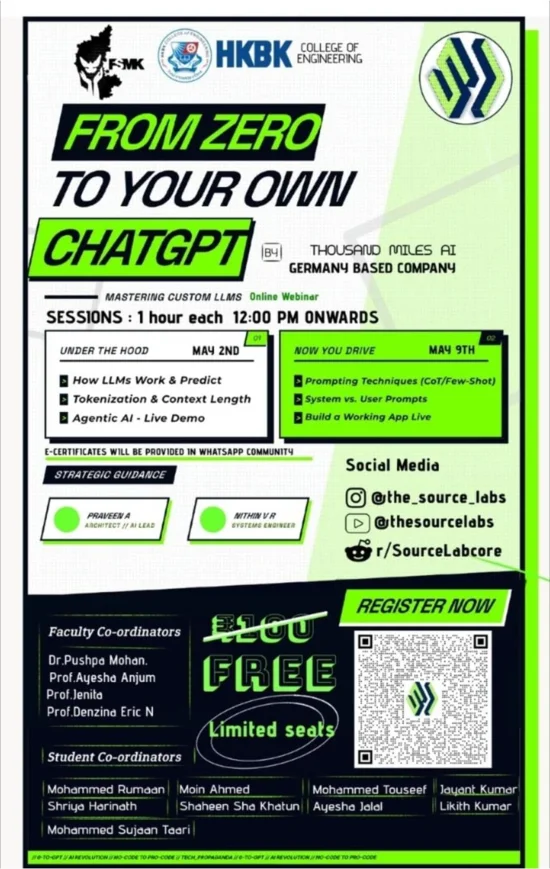

Linux Installation Workshop
From the power button to a working GNU/Linux desktop.
The Source Lab is HKBK’s student free software community in Bengaluru. Explore GNU/Linux, build with open-source tools, and learn alongside other students.

Posters, photos and session notes from the cell.

From the power button to a working GNU/Linux desktop.

An introduction to FOSS, Linux and the open-source ecosystem.

Two sessions on how language models work and how to build with them.

Linux, the command line and the systems we use every day.
Visit a distribution’s official website for desktop editions, installation media and documentation.
HKBK’s free and open-source software (FOSS) cell brings students together to learn by doing. Core members practise installing GNU/Linux, and campus seminars introduce students to the terminal and the software they use every day.
Explore our workshopsFSMK is a volunteer-led nonprofit that helps people learn, use, study, change and share free software. Its members support campus GNU/Linux Users’ Groups (GLUGs). At HKBK, FSMK member Shijil TV led The Sudo Execute, and FSMK and The Source Lab presented Open Source Odyssey.
Learn about FSMK’s GLUGsOur campus is in Nagawara, Bengaluru. HKBK faculty and student coordinators organise the cell’s activities, from an introductory Linux session in the CSE Seminar Hall to hands-on workshops for core members.
Visit the college websiteWant to join The Source Lab, ask about a workshop or propose a session at HKBK? Send a message to the cell.
You can also reach us on Instagram.